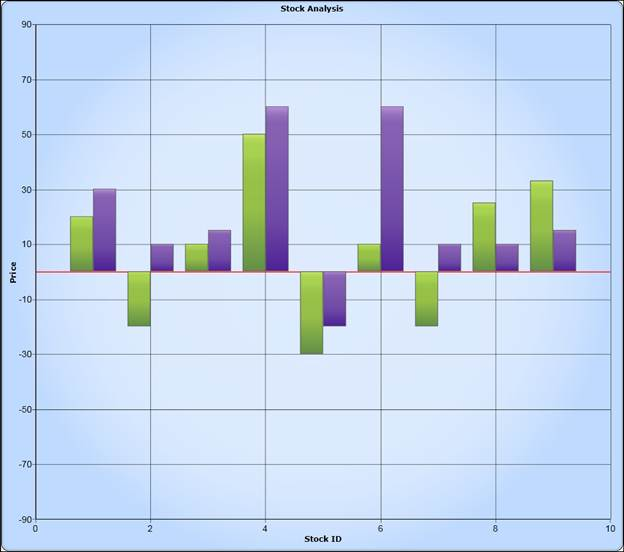
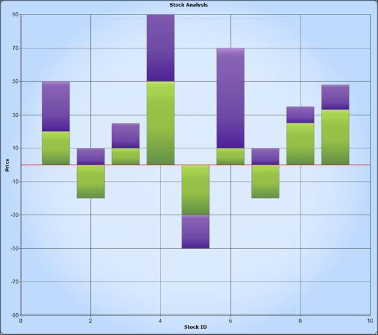

The origin axis support can be added to the chart using the following code samples.
|
[XAML] <sync:ChartAxis Origin="1" ShowOriginLine="True" OriginLineStroke="Red" OriginLineStrokeThickness="2" />
|
|
[C#] chart1.Areas[0].PrimaryAxis.Origin = 1; chart1.Areas[0].PrimaryAxis.OriginLineStroke = new SolidColorBrush(Colors.Red); chart1.Areas[0].PrimaryAxis.OriginLineStrokeThickness = 2; chart1.Areas[0].PrimaryAxis.ShowOriginLine = true;
|

Figure 123: Origin Axis Support for Column Chart

Figure 124: Origin Axis Support for Stacked Column Chart